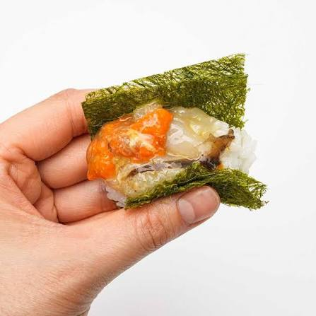

갑각류 알러지
간장 게장 먹으면 목구멍 입술 퉁퉁 부음...


갑각류 알러지
간장 게장 먹으면 목구멍 입술 퉁퉁 부음...

나도 갑각류 알러지 있어서
햇빛 알레르기가 1티어일 거 같은데
그냥 고기 단백질 알레르기가있는데 어딜 갑각류따위가
쌀 알러지
갑각류는 그래도 껍데기만 피하면 ㄱㅊ
?
항히스타민제 먹고 먹으면 괜찮나?
뭣?
살려다오 ㅠㅠ
살려는 드릴게
괜찮음
꼭 그렇게까지 먹어야하나?
고기 일러짇ㅎ 있는데 저정도야 뭐…
내가 직접 본 최악은 군대에서 있었는데, 소 돼지 전부 일러지 있었음. 그나마 닭은 괜찮았고 문제는 고기를 바깥에선 먹다가 군대에서 심해져서 고통 받더라
쌀알레르기도 최악임 ㅋㅋㅋㅋ
최고는 물,햇빛임
그런게 최고인건 아는데 내가 만난적 없으니까
고기 알러지는 나랑 같은 생활관에 생활해서 밥먹으러 가면 나는 항상 개꿀이었음. 그리고 고마워서 라면 같은거랑 음료수 내가 줬음.
콩 알러지 있으면 한국에서 먹을게 별로 없겠는데
약 추천좀
알레그라 강추
졸음도 거의 없고 효과가 좋음
한국에서 파는건 120mg짜리 약한건데 (이걸로도 약효는 충분하긴 함) 미국에서 약 살일 있으면 180mg짜리 쎈거 파니까 사와.
직구로 사면 통관 될 수도 있고 걸릴수도 있고 복불복임
쌀 알러지
마늘 알러지
햇빛 알러지
내가 생각하는 저주받은 3대 알러지임
어딜 갑각류 따위가
물 알러지가 있다는 사실 알고 계셨나요
땀흘려도 좆되는 물 알러지
난 회사 알러지가 있어
그거나도있음
ㅈㄹㄴ 돼지고기 알러지가 원탑임
단백질 알러지가 고트임
각갑류 환장하는데 20대 중반에 갑자기 생김
그 이후로 안죽어 안죽어 하면거 게장먹다 두번 죽을뻔함
와이프랑 여수게장먹다 기도막혔을때 둘이먹다 하나가 죽을뻔했네 ㅋㅋ 했다가 맞아죽을뻔함
난 선천적으로 집먼지진드기알러지 있는데, 나이먹고 점점 심해져서 한달에 한번 주기적으로 침구류 싹 빨고 진드기제거제 뿌리고 침구류 청소기로 치워야 알러지 안터지더라..
게다가 얼마전에 좋아하던 번데기 통조림 먹고 온몸의 피부 아래에서 벌레 기어다니는 간지럼 느끼면서 호흡곤란 직전까지 와서 이제 번데기 못먹음..
음식에 후천적 알러지 생기는게 생각보다 괴롭다 그 맛을 알고있는데 몸이 거부하니
선천적 알러지는 어릴때부터 삶의 방향이 꺾인채로 살아와서 생각보다 살만한데, 후천적 알러지는 역체감때문에 생각보다 불편함
물론 쌀이나 밀가루 알러지, 햇빛알러지같은거 선천적으로 있으면 삶의질 수직낙하할듯
내가 갑각류 알러지가 있는데 다행인거인
익히면 먹을수있음…
난 페니실린 계열 항생제 알러지가 있음
원래 안먹음
밀가루 알레르기 이런게 훨씬 고통스러울거같은데
보통 선천적이지 않고 후천적이기 때문에 더 고통스러운
그 새우, 게 감칠맛을 이미 아는데 먹으면 심하면 목구멍 부으면서 숨도 잘 안쉬지니
나는 민감도 낮은 편이라, 게 익히면 먹을 수 있어서 탕이나 찜 같은건 먹을 수 있음.
근데 간장 게장이나 양념게장 중학교 때 까지는 먹어도 괜찮았어서 그 맛을 알고 있기 때문에 좀 아쉽긴 함 ㅋㅋㅋ
나 궁금한데 간장게장,간장새우장 먹으면 입안이랑 목구멍이 벨벳처럼 변한 느낌? 먼가 표현이 이게 한계긴한데
이거 알러지 반응ㅇ임? 양념게장 양념새우장은 또 안그럼
유제품알러지 계란알러지
저런거야 뭐 안먹는다고죽진않으니 알아서 피해야지..
난 곱창/대창/막창 구워서 못먹음..
애초에 안먹고싶다
섹스 알러지있어서 아직 못하고있음..
갑각류,어패류 알러지 있는데 조금만 가려먹음되서
저주까진 아닌듯?
저기 시간날때 밥이라도....
저 밥 알러지 있어요.
알러지도 유전일까 엄마도 없다가 갑자기 생기더니 몇년뒤에 없어짐, 누나도 갑자기 생김 아직 알러지 있음 나도 생기려나
표고버섯 알러지 있다ㅋㅋ일본서 먹고 살기 힘들다...
알싸한 맛이 일품인 새우
이게 진짜 저주받은게
내가본 갑각류알러지는
다 후천임 ㅋㅋ 맛을알고 못먹는다는거
별거 아닌거 같지만 고양이 개 알러지 진짜 죽을거 같다
너무 흔한 알러지같지만 난 정도가 심해서 엘베도 못타고 지하철 버스도 마스크 쓰고 타야함
타인이랑 악수도 못함 상대방 가방도 못 들어줌 옷걸이에 내 옷 위에 다른 사람 옷 닿을까 걱정되어 매일 엄청 유난을 떨어야하는데 오히려 흔한 알러지인데 왜 이렇게 호들갑 떠냐고 뭐라고해서 최대한 티도 안 내야하는데 집 나서는 순간부터 걱정이다
나 알러지 있었네 특정 음식 먹으면 입술이 가려운게 있었는데 꼬막,게장 이 두개였거든 혀가 간지러운거는 멜론 참외 수박 단감 생밤 요정도 있었는데 과일들은 극복했는데 게장이랑 생밤은진짜 입술이 퉁퉁 부음 그래도 그냥 참고 있으면 먹는편
어딜 갑각류따위가 ㅋㅋㅋ
나는 내가 고등학생때 앓았던 콜린성 알러지가 최악인 것 같음. 몸에 어떤 이유로든 체온이 올라가면 뜨겁게 달군 바늘로 내 몸 곳곳을 랜덤찌르기 하는 느낌
음?? 원래 짜릿짜릿한 맛으로 먹는거 아녔어?
ㅋㅋ 웃었다